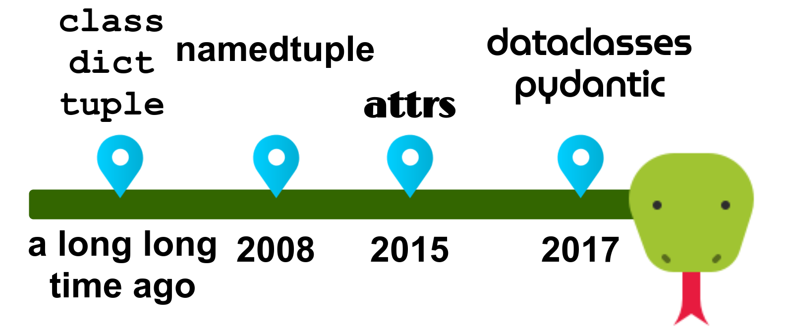

作为开发者，我们每天会产出大量的数据。 而这些数据的表现尤为重要。因此，我们需要能够跟踪哪些变量代表哪些属性。 配置化是针对复杂数据的一个首要示例。
在以下文章中，我将使用位置数据作为示例。它必须有一个经度，纬度，外加一个可选的地址。在 C 语言中，可以使用 struct 来表示，而在 Java 中，我们只需创建一个类。在 Python，我们则有六种方法可供选择。让我们来探索他们每一个的优点和缺点吧！
普通类是标准库为组织数据而提供的默认方式。你可以（而且应该！）使用以下示例中的类型注释：
from typing import Optional
class Position:
MIN_LATITUDE = -90
MAX_LATITUDE = 90
MIN_LONGITUDE = -180
MAX_LONGITUDE = 180
def __init__(
self, longitude: float, latitude: float, address: Optional[str] = None
):
self.longitude = longitude
self.latitude = latitude
self.address = address
@property
def latitude(self) -> float:
"""Getter for latitude."""
return self._latitude
@latitude.setter
def latitude(self, latitude: float) -> None:
"""Setter for latitude."""
if not (Position.MIN_LATITUDE <= latitude <= Position.MAX_LATITUDE):
raise ValueError(f"latitude was {latitude}, but has to be in [-90, 90]")
self._latitude = latitude
@property
def longitude(self) -> float:
"""Getter for longitude."""
return self._longitude
@longitude.setter
def longitude(self, longitude: float) -> None:
"""Setter for longitude."""
if not (Position.MIN_LONGITUDE <= longitude <= Position.MAX_LONGITUDE):
raise ValueError(f"longitude was {longitude}, but has to be in [-180, 180]")
self._longitude = longitude
pos1 = Position(49.0127913, 8.4231381, "Parkstraße 17")
pos2 = Position(42.1238762, 9.1649964)
def get_distance(p1: Position, p2: Position) -> float:
pass
你可以看到我们需要编写一个构造器方法 __init__。构造器的代码在大部分情况下是简单的，尽管有一些例外。
你可以看到我们在代码中使用了位置参数或关键字参数。如果你在构造器中给某一变量定义了一个默认值，那么在创建类的实例的时候可以不给这个变量赋值。可以参考 pos2，其中的 address 变量并没有在构造的时候赋值。
你也可以看出这个 get_distance 方法的注解非常的清晰，方法本身就很好的表明了它的意义。
由于所有的编辑器都需要支持普通类，因此它的工具支持性是很有保证的。并且能够在调用的时候获取全部的有用信息。
元组是一种基本的 Python 数据类型。它的内存占用很低，因此我们可以通过索引非常快的寻址到所需的元素。元组的问题则是我们无法获知成员属性的名称，我们不得不记住每一个索引代表队属性。元组总是不可修改的。
from typing import Tuple, Optional
pos1 = (49.0127913, 8.4231381, "Parkstraße 17")
pos2 = (42.1238762, 9.1649964, None)
def get_distance(p1: Tuple[float, float, Optional[str]],
p2: Tuple[float, float, Optional[str]]) -> float:
pass
get_distance 方法的注解看起来非常的杂乱。开发者需要知道的信息是 p1 表示的是地点，而非这个地点信息包含着两个浮点数以及一个可选的字符串——这是编辑器需要做的工作。
编辑器的支持程度取决于你注解的透彻性。在上面的例子中，你也可以只写 Tuple 而省略掉指出这个元组所包含的内容。由于人们大多是比较懒惰的，我认为这里的编辑器支持做的不是很好。这不是编辑器的错，但是它因此经常无法提供较好的代码提示支持。
字典是 Python 的基本数据类型，并且可能是 Python 中最常见的传递数据的载体。与元组相比，字典由于要保存属性的名称，它的内存占用会大一些，但是这仍是可以接受的。通过索引来获取数据很快。字典总是可以修改的，不过有一个第三方的库 frozendict 可以解决字典可以被随意修改的问题。
from typing import Any, Dict
pos1 = {"longitude": 49.0127913,
"latitude": 8.4231381,
"address": "Parkstraße 17"}
pos2 = {"longitude": 42.1238762,
"latitude": 9.1649964,
"address": None}
def get_distance(p1: Dict[str, Any],
p2: Dict[str, Any]) -> float:
pass
在实际中，注解确实很糟糕。通常来说几乎没有字典的注解，在大部分情况下的注解会是 Dict[str, Any]。
TypedDict (PEP 589) 自从 Python 3.8 一直存在，但是我从没在大型的项目中见到这样的写法。 TypedDict 是一个杀手级功能，但是这无关大多数的项目，我们希望在旧有的 Python 版本中也获得此功能支持。
基于上述的原因，字典的编辑器支持效果甚至比元组更差。
命名元组（NamedTuples） 在 Python 2.6 中被加入，索引此数据结构已经存在很久了。命名元组事实上也是元组，但是他们会有一个名称以及一个构造器，用来接受关键字参数：
from collections import namedtuple
attribute_names = ["longitude", "latitude", "address"]
Position = namedtuple("Position", attribute_names, defaults=(None,))
pos1 = Position(49.0127913, 8.4231381, "Parkstraße 17")
pos2 = Position(42.1238762, 9.1649964)
def get_distance(p1: Position, p2: Position) -> float:
pass
命名元组解决了类型声明注解难以阅读的问题。因此，它也解决了我上文中提到的编辑器支持不完全的问题。
有趣的是 NamedTuples是不能感知到类型的：
>>> from collections import namedtuple
>>> Coordinates = namedtuple("Coordinates", ["x", "y"])
>>> BMI = namedtuple("BMI", ["weight", "size"])
>>> a = Coordinates(60, 170)
>>> b = BMI(60, 170)
>>> a
Coordinates(x=60, y=170)
>>> b
BMI(weight=60, size=170)
>>> a == b
True
attrs 是一个第三方的库，用来减少一些重复模板代码的编写。开发者可以在类上面添加一个 @attrs.s 装饰器来引入。属性则可以使用一个 attr.ib() 方法来赋值：
from typing import Optional
import attr
@attr.s
class Position:
longitude: float = attr.ib()
latitude: float = attr.ib()
address: Optional[str] = attr.ib(default=None)
@longitude.validator
def check_long(self, attribute, v):
if not (-180 <= v <= 180):
raise ValueError(f"Longitude was {v}, but must be in [-180, +180]")
@latitude.validator
def check_lat(self, attribute, v):
if not (-90 <= v <= 90):
raise ValueError(f"Latitude was {v}, but must be in [-90, +90]")
pos1 = Position(49.0127913, 8.4231381, "Parkstraße 17")
pos2 = Position(42.1238762, 9.1649964)
def get_distance(p1: Position, p2: Position) -> float:
pass
通过把装饰器改成 [@attr.s(frozen=True)](https://www.attrs.org/en/stable/api.html) 来使这个类变得不可修改。
你也可以在构造器入参的时候自动执行代码。这被称为是 “转换”。[文档]((https://www.attrs.org/en/stable/examples.html#conversion)中给出了一个很好的例子：
>>> @attr.s
... class C(object):
... x = attr.ib(converter=int)
>>> o = C("1")
>>> o.x
Visual Studio Code 中对类型注解有很多的插件可以使用。
Dataclasses 在 PEP 557 中被加入 Python 3.7。它与 attrs 类似，但是被收录于标准库中。一个很重要的点是 dataclass 就是普通的类， 不过是其中保存大量的数据而已。
与 attrs 不同的是，dataclass 使用类型注解而非 attr.ib() 这样的注解。我认为这样大大提高了可读性。另外，由于现在对属性有了注解，编辑器的支持效果也更好了。
你可以很容易的利用装饰器 @dataclass(frozen=True) 使 dataclass 变成不可修改的——这与 attrs 类似。
from typing import Optional
from dataclasses import dataclass
@dataclass
class Position:
longitude: float
latitude: float
address: Optional[str] = None
pos1 = Position(49.0127913, 8.4231381, "Parkstraße 17")
pos2 = Position(42.1238762, 9.1649964, None)
def get_distance(p1: Position, p2: Position) -> float:
pass
这里我少说的一部分是属性的验证。可以在构造器中使用 __post_init__(self) 来实现：
def __post_init__(self):
if not (-180 <= self.longitude <= 180):
v = self.longitude
raise ValueError(f"Longitude was {v}, but must be in [-180, +180]")
if not (-90 <= self.latitude <= 90):
v = self.latitude
raise ValueError(f"Latitude was {v}, but must be in [-90, +90]")
你也可以将 dataclass 和属性一起使用：
@dataclass
class Position:
longitude: float
latitude: float
address: Optional[str] = None
@property
def latitude(self) -> float:
"""Getter for latitude."""
return self._latitude
@latitude.setter
def latitude(self, latitude: float) -> None:
"""Setter for latitude."""
if not (-90 <= latitude <= 90):
raise ValueError(f"latitude was {latitude}, but has to be in [-90, 90]")
self._latitude = latitude
@property
def longitude(self) -> float:
"""Getter for longitude."""
return self._longitude
@longitude.setter
def longitude(self, longitude: float) -> None:
"""Setter for longitude."""
if not (-180 <= longitude <= 180):
raise ValueError(f"longitude was {longitude}, but has to be in [-180, 180]")
self._longitude = longitude
但是，我不太喜欢这种超级冗长且丢失了许多 dataclass 独有魅力的手段。 如果你需要类型未涵盖的验证，请使用 Pydantic。
Pydantic 是一个专注于数据各实验组和设置管理的第三方库。要使用它，你可以继承自 pydantic.BaseModel 或者创建一个 Pydantic 的 dataclass：
from typing import Optional
from pydantic import validator
from pydantic.dataclasses import dataclass
@dataclass(frozen=True)
class Position:
longitude: float
latitude: float
address: Optional[str] = None
@validator("longitude")
def longitude_value_range(cls, v):
if not (-180 <= v <= 180):
raise ValueError(f"Longitude was {v}, but must be in [-180, +180]")
return v
@validator("latitude")
def latitude_value_range(cls, v):
if not (-90 <= v <= 90):
raise ValueError(f"Latitude was {v}, but must be in [-90, +90]")
return v
pos1 = Position(49.0127913, 8.4231381, "Parkstraße 17")
pos2 = Position(longitude=42.1238762, latitude=9.1649964)
def get_distance(p1: Position, p2: Position) -> float:
pass
乍一看，这与标准的 @dataclass 相同，只是从 Pydantic 获得了 dataclass 装饰器。
我不太会自觉地考虑可变性，但是在很多情况下，我希望我的类是不变的。最大的例外是数据库模型，但它们本身就是自洽的。
可以选择将类标记为冻结以使其对象不可变，这非常不错。
为一个可变对象实现 hash 是有问题的，因为当对象改变时哈希值可能会改变。这意味着如果对象在字典中，则字典将需要知道对象的哈希值已更改，并将其存储在其他位置。因此，默认情况下，dataclass 和 Pydantic 都不对可变类进行散列，因为他们有 unsafe_hash。
拥有合理的字符串表示形式非常有帮助（例如，用于日志记录）。老实说：很多人都在进行 print 调试。
如果我们打印上面例子中的 pos1，下面是我们能得到的。为了方便阅读已经添加了换行和缩进。原始的输出是在一行内的：
>>> print(pos1)
Plain class : <__main__.Position object at 0x7f1562750640>
# 1 Tuples : (49.0127913, 8.4231381, 'Parkstraße 17')
# 2 Dicts : {'longitude': 49.0127913,
'latitude': 8.4231381,
'address': 'Parkstraße 17'}
# 3 NamedTuple: Position(longitude=49.0127913,
latitude=8.4231381,
address='Parkstraße 17')
# 4 attrs : Position(longitude=49.0127913,
latitude=8.4231381,
address='Parkstraße 17')
# 5 dataclass : Position(longitude=49.0127913,
latitude=8.4231381,
address='Parkstraße 17')
可以看到从普通类创建的对象的字符串表示形式是无用的。元组看起来更好，但是它们没有指出哪个索引代表哪个属性。其余所有表示形式都很棒。它们很容易理解，甚至可以用来重新创建对象！
现在我们已经了解了如何为普通类、attrs、dataclass 和 Pydantic 实现数据验证。但我们还并不清楚错误消息的样子。
接下来，我将新建一个 Position(1234, 567)，里面的经度和纬度都是不正确的。下面是不同的数据结构触发的错误信息：
# Plain Class
ValueError: Longitude was 11111, but has to be in [-180, 180]
# 4: attr
ValueError: Longitude was 1234, but must be in [-180, +180]
# 5: dataclasses
(same as plain classes is possible)
# 6: Pydantic
pydantic.error_wrappers.ValidationError: 2 validation errors for Position
longitude
Longitude was 1234.0, but must be in [-180, +180] (type=value_error)
latitude
Latitude was 567.0, but must be in [-90, +90] (type=value_error)
我要指出的是这一点：Pydantic 非常清楚地为我们提供了所有错误。 普通的类和属性只会给我们返回第一个错误。
JSON 是在网络上交换数据的方式。GitLab API 也不例外。假设我们要拥有可以序列化为 JSON 的 Python 对象，以[获取单个合并分支请求]（https://docs.gitlab.com/ee/api/merge_requests.html#get-single-mr）。 在 Pydantic 中，就这么简单（删除了许多属性以提高可读性）：
from pydantic import BaseModel
class GitlabUser(BaseModel):
id: int
username: str
class GitlabMr(BaseModel):
id: int
squash: bool
web_url: str
title: str
author: GitlabUser
mr = GitlabMr(
id=1,
squash=True,
web_url="http://foo",
title="title",
author=GitlabUser(id=42, username="Joe"),
)
json_str = mr.json()
print(json_str)
这返回了：
{"id": 1, "squash": true, "web_url": "http://foo", "title": "title", "author": {"id": 42, "username": "Joe"}}
对于 dataclasses 而言，[dataclasses.asdict](https://docs.python.org/3/library/dataclasses.html#dataclasses.asdict) 做了很多工作。然后，字典可以被直接序列化为 JSON。对于 DateTime 或者小数对象的结果会很有趣。 attrs 的结果也是相似的 。
使用 JSON 字符串对嵌套类进行用户化对于 Pydantic 来说是很容易的。使用上面的示例，可以这么写：
mr = GitlabMr.parse_raw(json_str)
datatclass 的实现则很不优雅。对于 attrs 的反序列化 则看起来好一些，但我猜想它在嵌套结构方面也很困难。而且，当谈到 DateTime 或小数时，我敢肯定，两者都比 Pydantic 出现更多的问题。序列化，反序列化和验证是 Pydantic 的亮点。
在 pos1 调用 [getsize](https://stackoverflow.com/a/30316760/562769) 方法可得：
Raw float : 8 B ("double")
Raw string : 1 B per char => 13B
Raw data : 29 B = 8B + 8B + 13B
Float object : 24 B
Str object : 86 B
3 objects : 134 B = 24B + 24B + 86B
Native class : 286 B
#1 Tuple : 198 B
#2 Dict : 366 B
#3 NamedTuple: 198 B
#4 attrs : 286 B
#5 dataclass : 286 B
#6 pydantic : 442 B (the "dataclass" version)
#6 pydantic : 801 B (the "BaseModel" version)
Pydantic 基本模型有相当大的开销，但是你始终必须明白的一点是，你将创建多少个这些对象？假设你有 100 个。它们中的每一个可能比更有效的替代方案多消耗 500B。 那将是 50kB。 引用 Donald Knuth ：
“过早的优化是万恶之源。”
如果内存占用出现了问题，那么你也不会从 Pydantic 切换到 dataclass 或 attrs，而是切换到更结构化的内容，例如 NumPy 数组或 pandas 的 DataFrames。
在这种情况下，“执行时间”可能意味着多个时间之和：
我坚信 JSON 的解析时间在其余时间中占主导地位。Python 中有多个 JSON 解析器可用：
使用 Python 进行 JSON 编码/解码-按速度，成熟度和操作安全性比较库
在你需要的时候选用：
Dict 。请注意，你可以将所有其他结构与 dict 混合使用，反之亦然。因此，如果你知道数据结构的一部分是什么样子，请使用其他类型的数据结构。我认为 dict 是不得已的选择。NamedTuple。BaseModel。请注意，我没有提到元组和属性。我根本无法找到一个有效的用例，在该用例中，与其他选择相比，我更希望你使用它们。如果你有合适的例子，请告诉我。
我也没有提到普通类，如果我需要重写 __init__、__eq__ 、__str__、__repr__ 和 __hash__ 或者支持旧的 Python 版本的时候，我会选择使用它。
如果发现译文存在错误或其他需要改进的地方，欢迎到 掘金翻译计划 对译文进行修改并 PR，也可获得相应奖励积分。文章开头的 本文永久链接 即为本文在 GitHub 上的 MarkDown 链接。
掘金翻译计划 是一个翻译优质互联网技术文章的社区，文章来源为 掘金 上的英文分享文章。内容覆盖 Android、iOS、前端、后端、区块链、产品、设计、人工智能等领域，想要查看更多优质译文请持续关注 掘金翻译计划、官方微博、知乎专栏。